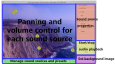
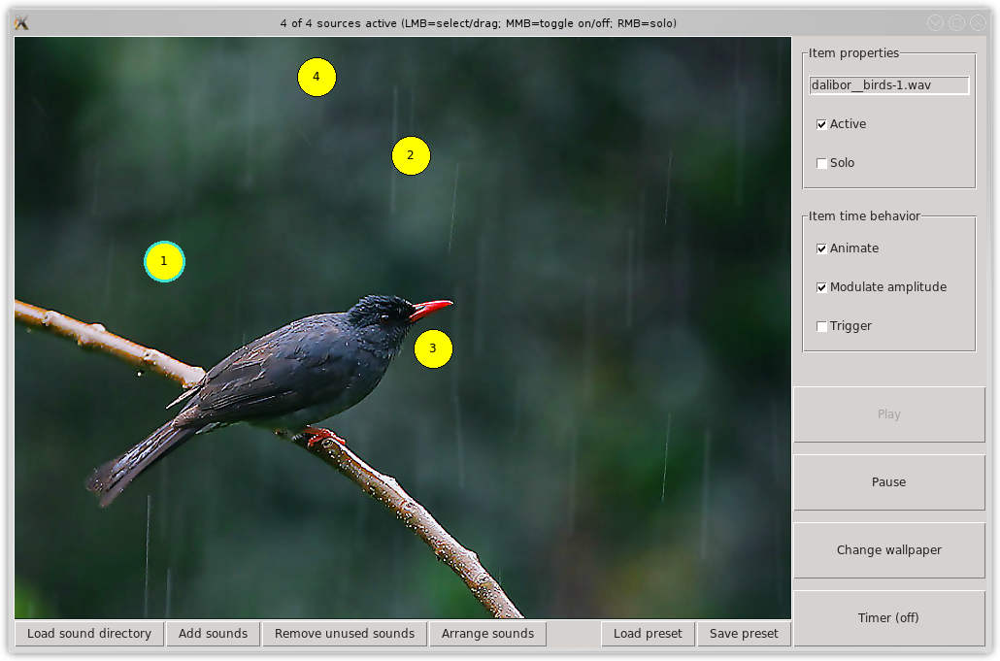

Screenshot with usage annotations:
Audio sample from the sea preset:
PyScape is a soundscape generator, i.e. a tool that plays various sound samples simultaneously, with randomly determined or fixed values for volume and panning for each. Unlike Boodler, PyScape has an interactive GUI to control sound parameters, add or delete sounds, etc. The goal here is not to have a tool with dozens of sliders like Atmosphere Deluxe, but instead something more simple and straightfoward that still fits most needs.
The yellow circles, which you can grab with the mouse, represent individual sound files/sources. Moving them horizontally changes left/right panning, moving them vertically changes volume. The middle mouse button toggles a sound source on and off.
The program also includes several presets and CC-licensed WAV files, e.g. pink and brown noise, the FM3 Buddha Machine loops, and various nature sounds from Freesound.org that can serve as a starting point for your own custom soundscapes.
Get it from the GitHub repo, either by cloning the repo (git clone git://github.com/mdoege/PyScape.git) or by downloading the latest archive.
If you are running Arch Linux (and you should), you can simply install the pyscape package from the Arch User Repository.
PyScape requires Python 2 and the OpenAL and FreeALUT libraries. If the Python Imaging Library is also present, pretty background images are displayed.
Run it as
python2 pyscape.py [preset.pyscape]
or via the included .desktop file.
So far this has only been tested on Linux, but it should also work on other platforms supported by Python, at least the Unix-like ones like FreeBSD. The code also contains a fix for Windows that converts forward slashes in path names to backward slashes, but again, this has not not been tested.
While the program itself is distributed under the GPL, the sounds and images have various CC licenses, sometimes forbidding commercial uses. Please consult the README files in the respective subdirectories for details.
This program is somewhat inspired by Interactive Soundscape Designer and Boodler. And without the excellent content at Freesound.org and Wikimedia Commons this kind of software would be pretty useless, so here's a great thanks to their contribtuors too!